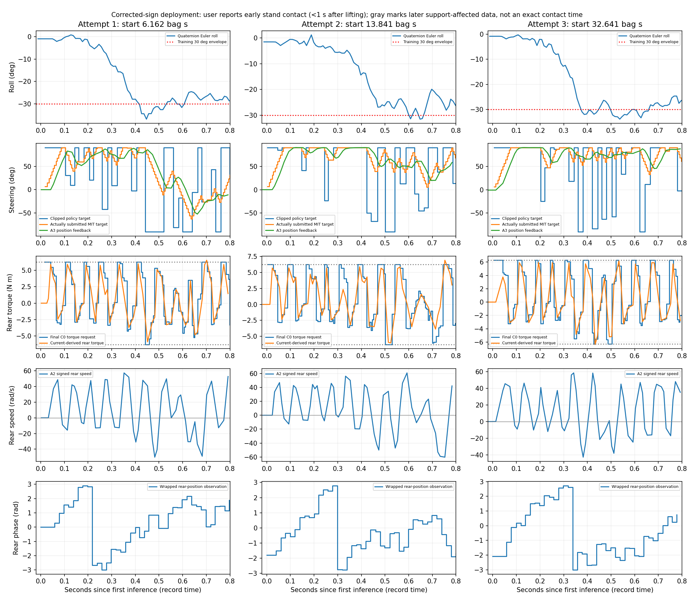
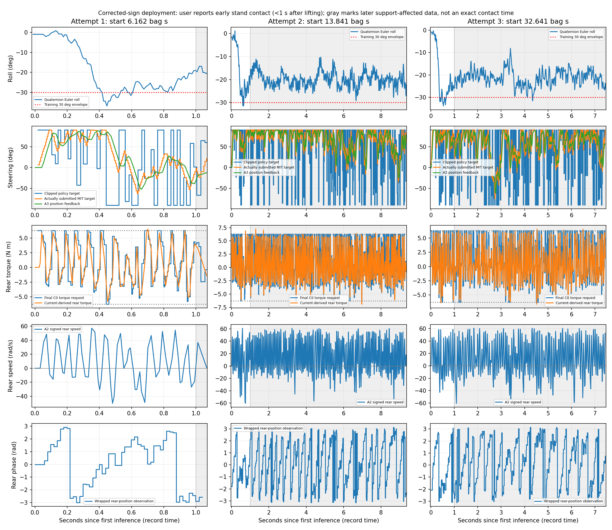
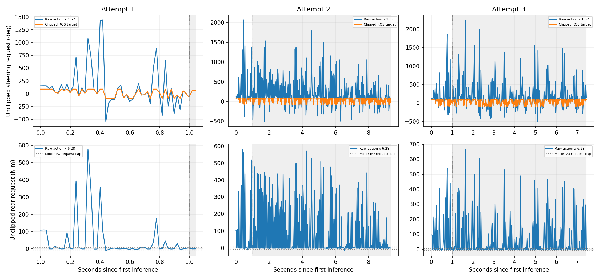
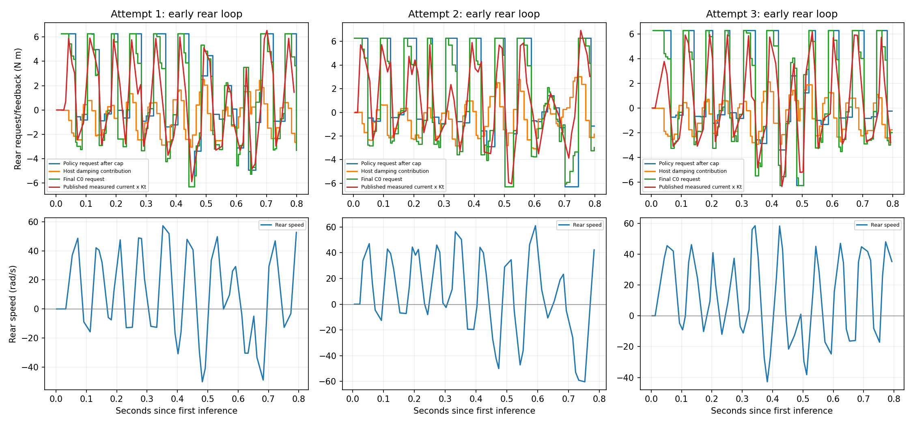
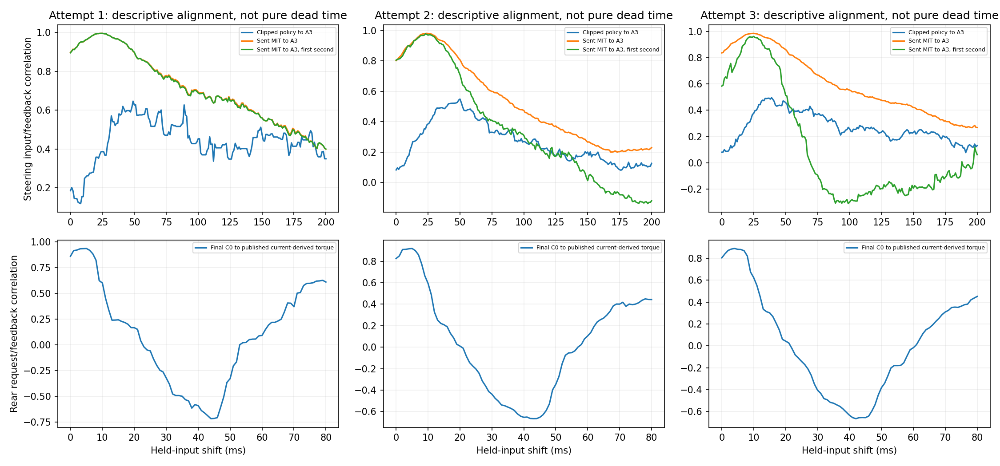
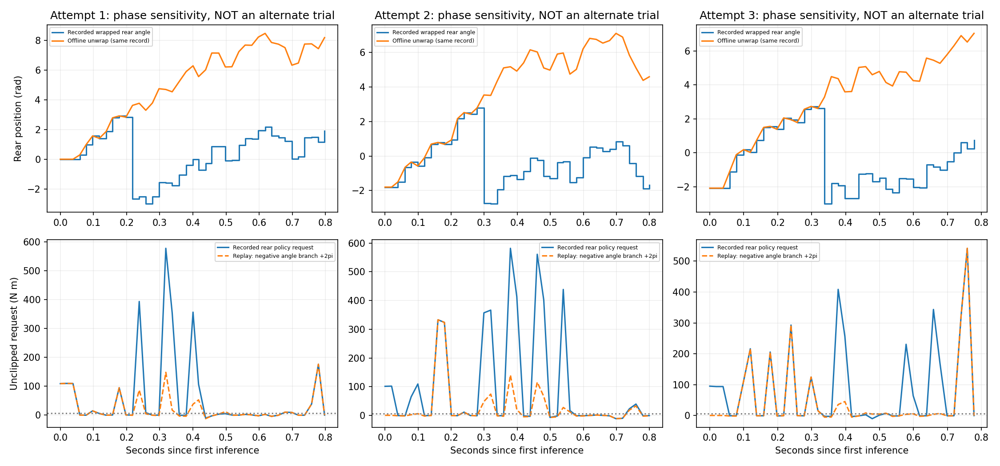
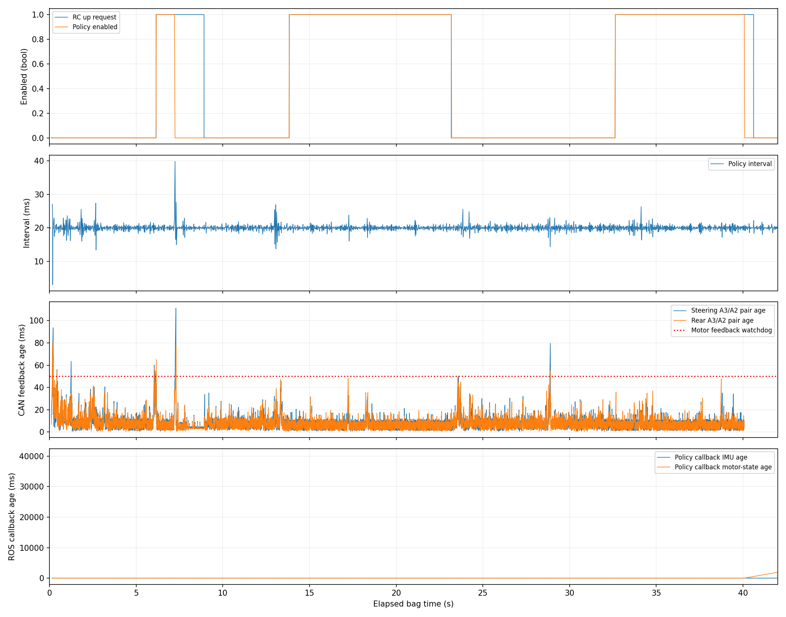

Recording: rosbag2_2026_10_12-18_06_07. 82.416 s; 3 attempts; 894 policy samples.
Full report, ranked causes and proposed tests · Statistics · Policy CSV · Successful motor-command CSV · Alignment scans · Phase replays
The user reports that a kickstand caught the bike less than one second after each release. Exact contact times are not recorded. Stable lean and gray intervals are not free balancing; the first second can already include support contact. One-second markers use inference time, not measured servo-release time. Main traces are not artificially time-shifted. Alignment scans and phase replays are explicitly offline diagnostics, not alternate hardware experiments.
Roll, clipped policy target, submitted MIT target, measured position/current, wheel speed and input phase.

Gray intervals begin at one second after first inference and flag later support-affected data, not an exact contact timestamp.



Correlation versus held-input shift is descriptive closed-loop alignment, not a universal firmware dead time.

Dashed traces change only recorded position inputs for replay; no alternate physics/contact trajectory was simulated.


Offline analysis only. Original data and deployment sources unchanged. Open SVG links for full-resolution plots.